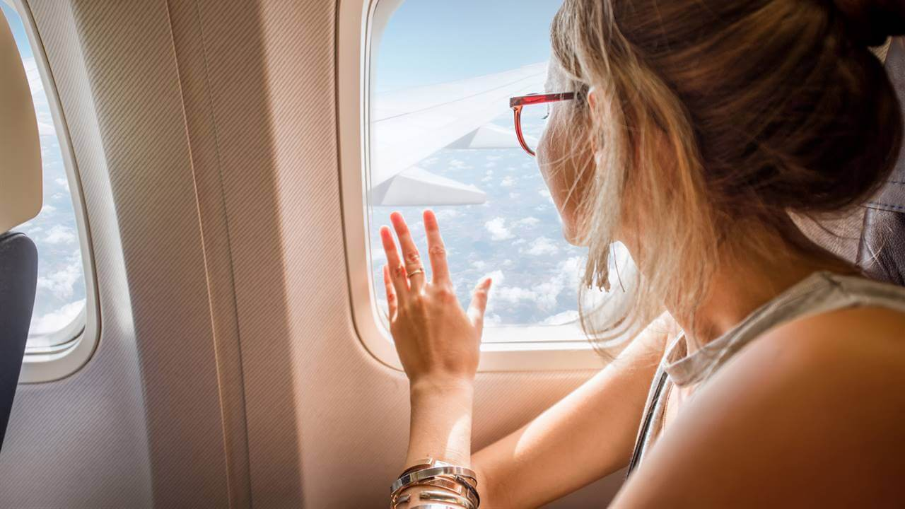
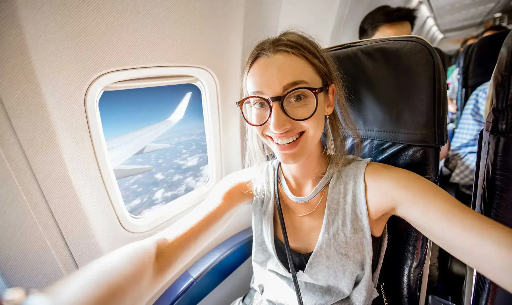

Esta información es para que aprendas a viajar en avión como un experto. Lo de experto lo digo en plan broma, porque incluso yo, después de muchísimos vuelos, sigo olvidando algunos pasos. Irónicamente, no me acuerdo mucho de mi primer vuelo. Tenía unos 14 años y fui a Buenos Aires en avión, invitada por una tía. A estas alturas ya hago los trámites de forma algo automática, así que en mi último viaje a México hice las anotaciones de todos los puntos que hay que seguir cuando volamos en avión.
Todo este artículo lo escribí suponiendo que ya compraste tus pasajes. Si aún no los has hecho, infórmate paso a paso como encontrar vuelos baratos.
Compra tus boletos al menos 45 días antes
¿Te concedieron la visa para viajar al país que anhelas? ¡Genial! Ahora es el momento para planear tu primer viaje en avión, comenzando por comprar los boletos. Según los expertos, el periodo ideal para conseguirlos al precio más bajo es de 3 meses a 50 días antes de la fecha de vuelo.
Si te arriesgas a adquirirlos la semana previa, lo más seguro es que sólo hallarás tarifas tan altas que te sacarán los ojos. Toma en cuenta que también influye el horario, el día, la temporada, el destino, la aerolínea y si se trata de un vuelo sencillo y redondo.
Te recomendamos usar Skyscanner para que compares precios entre aerolíneas y veas qué factores te dan el mejor precio.
Prepara tu equipaje
Si vas a viajar en avión por primera vez, la mejor opción es hacer tus maletas sólo con las prendas y artículos básicos que llevarás a tu viaje. Según las reglas y tarifas, debes conocer estos tres tipos de equipaje:
Equipaje de mano
Las medidas estándar del equipaje de mano son 55 x 35 x 25 centímetros. Su peso va de los 8 a los 12 kilos. Por lo general, no puedes llevar en él objetos afilados, aerosoles, líquidos ni comida.
Lo colocas en los gabinetes que están arriba de los asientos. También se le conoce como equipaje de cabina o carry on luggage.
Objetos personales
Esta categoría comprende libros, revistas, dispositivos electrónicos y hasta golosinas que puedes llevar en un bolso o mochila pequeña. Si cargas con medicamentos, incluye la receta.
En tu primera vez viajando en avión, descubrirás que siempre te piden colocar este equipaje debajo del asiento que está delante de ti. Tanto por tu comodidad como por seguridad.
Equipaje facturado
Corresponde a tu maleta principal. El peso límite va de los 19 a los 23 kilos. Más allá de este punto, la aerolínea te cobrará cargo por cada kilo de sobrepeso. Lo entregas antes de abordar y se va a la zona de carga del avión.
Por supuesto, las restricciones y precios cambian entre aerolíneas, por lo que debes consultar sus políticas antes de elegir una. Sin embargo, la lección es que llevar demasiado equipaje no sólo puede lastimar tu espalda, sino también tu bolsillo. ¡Así que empaca a conciencia!.
Haz tu check-in antes de viajar en avión por primera vez
A diferencia de otros medios de transporte, no basta comprar tu boleto para abordar el avión. Hay una serie de pasos previos. El primero es hacer el check-in a más tardar un día antes de tu vuelo. Este trámite consiste en proporcionar información sobre tu equipaje, preferencias de viaje y servicios adicionales que quisieras adquirir.
De preferencia, hazlo en la página web de la aerolínea para evitar filas en el aeropuerto. En esta fase, muchas compañías te permiten elegir tu asiento e imprimir tu pase de abordar. De esta manera, al llegar al aeropuerto podrás ahorrar tiempo y pasar directo a dejar tu equipaje facturado.
Llega temprano para viajar en avión
Por lo general, las aerolíneas te pedirán estar en el aeropuerto una hora antes si tu vuelo es nacional. En cambio, debes llegar al menos con dos horas de anticipación si viajas al extranjero.
Al viajar en avión por primera vez, te conviene respetar estos tiempos. Te dan margen de maniobra ante congestionamientos, fallas técnicas y posibles revisiones aduanales y migratorias. Recuerda que no vas abordar un autobús. ¡No te confíes del tiempo!
Ten a mano tu pasaporte y visa
Alistar tu pasaporte es una de las tareas más importantes cuando te preguntas qué hacer antes de viajar. Cuando vayas camino a abordar tu avión entenderás que te pedirán el bendito documento reiteradamente.
Antes de subir al avión de ida, lo tendrás que presentar al menos para registrar tu equipaje, durante el control de seguridad y antes del embarque. Al llegar a destino, ten por seguro que un agente de inmigración revisará que tengas el documento vigente y con la visa necesaria, si es requisito.
En algunos casos, será necesario que el pasaporte tenga una vigencia mínima de 6 meses. De lo contrario, no podrás viajar.
Portáte bien y no te comportes extraño
No me reproches si sueno como tu mamá, pero al viajar en avión por primera vez es de suma importancia que te comportes cuando estés en los aeropuertos. Estos lugares están repletos de cámaras, policías, detectores de sustancias y hasta agentes encubiertos.
Así que, para no quedar en medio de la paranoia antidrogas y antiterrorista, evita llevar sustancias prohibidas (aunque sea de consumo personal) y mantén un perfil tranquilo. ¡Te conviene! Investiga cuáles son los objetos restringidos al viajar a tu país de destino.
Si ocurre una emergencia mientras estás en el aeropuerto, mantén la calma y evacúa por las salidas indicadas. Es remota la posibilidad de que esto pase durante tu primer viaje, pero no está de más que lo sepas.
Otro consejo para cuando viajes: Jamás acceder a cargar con el equipaje de un desconocido ni le confíes el tuyo. A menos que tengas ganas de aparecer en el programa de TV Alerta Aeropuerto, ja ja ja (broma).
Pasa los controles de seguridad sin nervios
Una vez que llegas al aeropuerto, vas a la recepción de tu aerolínea, revisa que tu equipaje facturado esté bien sellado y lo dejas. Justo después, vienen los controles de seguridad.
La clave para pasarlos sin problemas es tener cuidado y atención a los detalles. No faltan quienes sucumben a los nervios y terminan olvidando desde prendas hasta pasaportes y otros requisitos para viajar al extranjero como estudiante o turista.
Dependiendo del aeropuerto, esta fase consiste sólo en que tu equipaje de mano pase por un escáner y tú por un detector de metales. O, en cambio, puede ser que te encuentres con policías malhumorados que revuelven tus cosas y hasta te hacen preguntas. ¡No desesperes!.
Ubica tu puerta de embarque
Superada la prueba de los controles de seguridad, tu siguiente misión es encontrar tu puerta de embarque en el aeropuerto. En el camino, seguro atravesarás un pasillo con las famosas tiendas duty free o libres de impuestos, pero no pierdas mucho tiempo en ellas.
Al viajar en avión por primera vez, es muy fácil confiarse de las distancias y los tiempos. Sin embargo, toma en cuenta que en los grandes aeropuertos el recorrido hasta la puerta de abordaje puede ser kilométrico. Además, no olvides que la hora de embarque precede en varios minutos a la hora de despegue.
Entonces, llega cuanto antes. Una vez ahí, podrás relajarte, ir al baño, cargar tu celular y comprar en las tiendas si quieres. Cuando anuncien tu salida, fórmate para entrar en orden. Te pedirán tu pase de abordar y pasaporte. Hecho esto, entrarás a la aeronave y quedarás en manos de la tripulación. ¡Disfruta del viaje!.
LLeva tu propio entretenimiento al viajar
En vuelos de más de tres horas, las aerolíneas suelen ofrecer una película o música a bordo. Sin embargo, pueden ocurrir “fallas técnicas” que impidan este servicio. ¡Imagínate si esto pasa en un viaje de 12 horas! Sólo te quedará hablar con el pasajero de al lado o dormir.
Así que, para evitar molestias, lo más recomendable es que vayas preparado con tu propio entretenimiento. Una revista o una lista de música relajante servirán perfecto para un viaje corto. Para sobrellevar una ruta transoceánica, descarga en tu móvil una o dos de las mejores películas de todos los tiempos, o algunos libros.
Supera la aduana y tu primer viaje en avión terminará con éxito
Cuando aterrices en tu destino, te espera una última prueba al viajar en avión por primera vez. Se trata de la aduana de inmigración. Al llegar, fórmate en la fila correcta y espera tu turno para pasar con el oficial correspondiente.
Si tienes suerte, sólo revisará tu pasaporte con visa, volverás a escanear tu equipaje de mano y te hará las tres preguntas de rutina:
- ¿Por qué vienes al país
- ¿Cuánto tiempo te vas a quedar?
- ¿Dónde te hospedarás?
Responde de forma educada y clara para que este proceso no te lleve más de 15 minutos.
También puede ocurrir que tengas la mala suerte de pasar por una inspección más minuciosa. En este caso, no desesperes ni te enojes. A veces los agentes sólo actúan con base en prejuicios. Respira hondo y muestra una actitud amable, pero confiada.
¿Pasaste la aduana? ¡Felicidades! Ve a recoger tu equipaje a la zona de las bandas de entrega. Cerciórate de que esté completo, sin daños y emprende el camino a la aventura.
